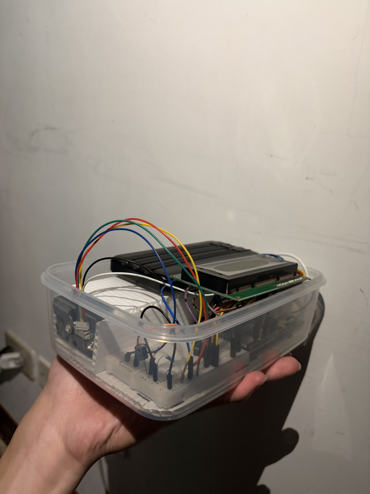

資料讀取與 AI 分析中...
什麼是「空污共犯」專案？
這是為「智在家鄉」競賽所打造的環境監測系統。有別於傳統的定點式空氣品質監測站，本平台透過群眾參與 (Crowdsourcing)，由車輛裝載微型感測器行駛於台北各街道，將每一次的移動軌跡轉化為守護城市的數據，補齊巷弄間微氣候的動態空污地圖。
運作機制：如何收集 PM2.5 數據？
本平台結合物聯網 (IoT) 技術與移動式微型感測器。車載感測裝置會實時收集高精度的 PM2.5 濃度 與 GPS 定位，並透過網路即時回傳至雲端資料庫，實現街道級別的動態空污監測。
感測器與資料準確度說明
本專案採用的微型空污感測器（如：Plantower PMS5003 雷射粉塵感測模組），經過初步校正，能有效反映趨勢變化。所有數據透過 Google Sheets API 即時開源，供學術研究與環境評估交叉比對使用，確保資料的透明度與可信度。
權威標準與數據參考
🔬 科學分級依據：本平台的 PM2.5 濃度健康風險分級，皆參考並對齊 行政院環境部空氣品質監測網 (AQI) 之最新指標，確保車載感測數據能與國家級觀測站標準具備高度可比較性。
為了發揮數據的最大價值，「空污共犯」的微型氣候觀測資料，未來將積極評估串接至 政府資料開放平臺 (data.gov.tw) 或與民間最大的 LASS (開源公益環境感測網路) 進行交叉分析，共同完善台北市的 3D 空污地圖。
平台提供哪些即時分析功能？
explore 即時地圖
視覺化呈現大台北市各區域的空氣品質熱區與 PM2.5 分佈情況。
dataset 數據後台
公開透明的原始感測紀錄，包含精準的經緯度與時間戳記。
bar_chart 圖表分析
提供直觀的 PM2.5 濃度折線圖與空污分級狀態的比例分佈。